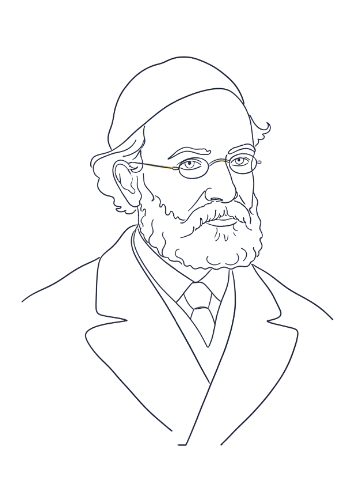
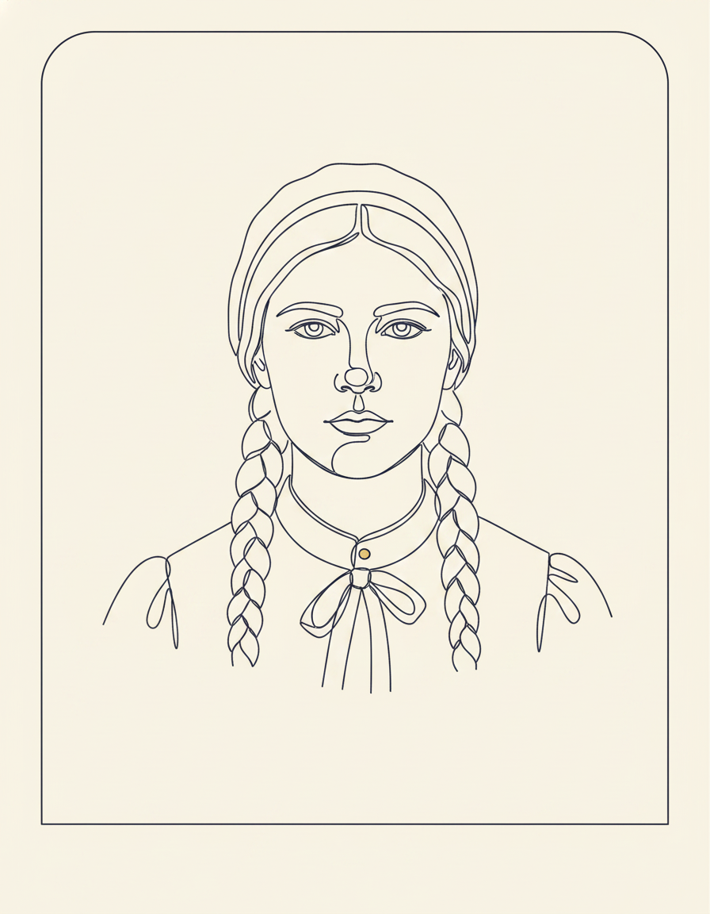
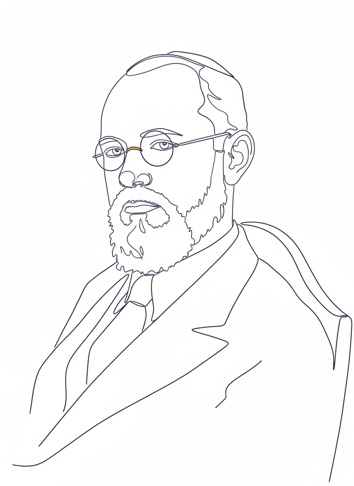
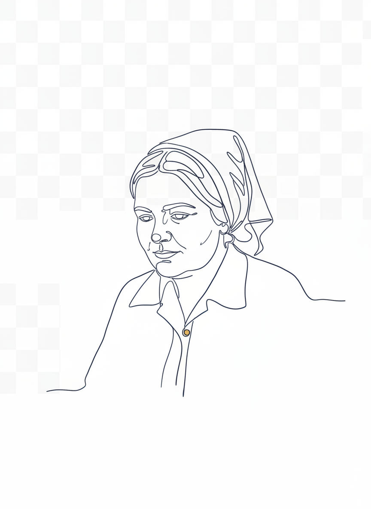
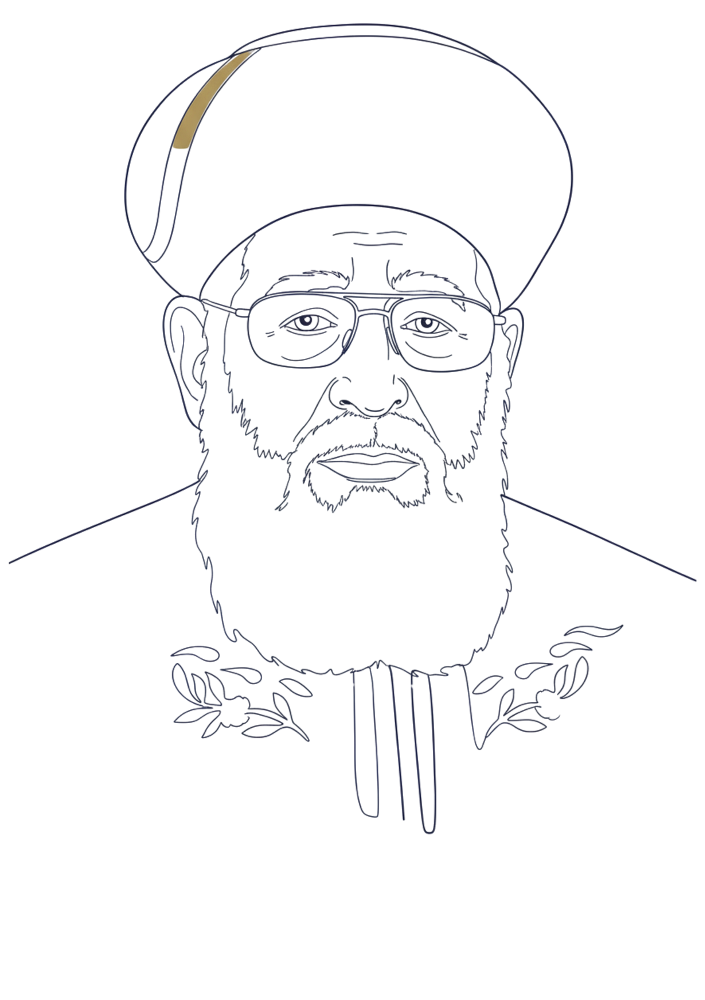

שמירת תורה ומצוות
אורח חיים אישי על פי ההלכה המסורה.
תנועה לחרדיות ממלכתית
תורה עם דרך ארץ. אחריות אישית, קהילתית, לאומית ואזרחית. שותפות אמיתית עם כלל החברה הישראלית — מתוך נאמנות לתורה ומתוך אחריות למדינה.
הדור החרדי הצעיר — מיליון נפש מתחת לגיל 25 — צומח לתוך מציאות שבה עתידו אינו ברור. דור שלם, בלא דרך מספקת לתורה ולעבודה, להשכלה ולשייכות בחברה הישראלית.
המטרה שלנו: לדאוג לעתידו.
שמירת תורה ומצוות במרכז החיים.
אורח חיים אישי על פי ההלכה המסורה.
הוקרת לומדי התורה ומוריה, ויחס מיוחד לעולם הישיבות כבית היוצר לנשמת האומה.
תורה כדרך חיים לכל אחד ואחת, לפי דרכו.
חשיבות לימוד התורה לכל אחד ואחת בכל זמן ובכל מצב.
תורה שאין עמה דרך ארץ — סופה בטילה. מוסר, פרנסה, אחריות, ושותפות.
מידות טובות, ויחס של כבוד לכל אדם שנברא בצלם.
דאגה ואחריות של כל אחד ואחת לפרנסת המשפחה, והכשרת ילדינו לעמוד בעתיד ברשות עצמם — מקצוע, השכלה וכישורי חיים.
הכרה בערכה, בקולה ובחלקה השווה של האישה במרחב הכלכלי, הקהילתי והציבורי.
טוהר מידות בענייני ממון, ציבור ושלטון — בלי פשרות.
פעילות ציבורית מתוך יושר, אמת, שקיפות ואחריות, דאגה לחלשים ולהוגנות.
הקהילה החרדית שותפה מלאה בנשיאת הנטל — בכלכלה, בביטחון, ובחברה.
הכרה בערכי צדק, חירות ושוויון, והתנהלות דמוקרטית של המדינה וגופים ציבוריים — לצד חיים יהודיים מלאים.
דמויות השראה מכוננות שמהן למדנו על היכולת של כולנו לחיות חיי תורה מלאים — לצד שותפות והובלה בחיי המעשה.

1808 – 1888 · פרנקפורט
אבי תפיסת "תורה עם דרך ארץ". הוכיח בחייו ובמשנתו שמחויבות מלאה לתורה ומצוות יכולה — וצריכה — להתקיים לצד מעורבות אזרחית, השכלה כללית ואחריות חברתית. הקווים המנחים שלו עומדים בלב התנועה.

1883 – 1935 · קרקוב
מייסדת רשת "בית יעקב". שינתה את פני החינוך לנשים בעולם החרדי — לא בדיעבד, אלא לכתחילה. הראתה שהעצמה תורנית של נשים, לצד התמודדות פתוחה עם המודרנה, היא חלק מהותי מבניין החברה היהודית.

1891 – 1965 · ירושלים
מתמטיקאי בעל שם עולמי, מאבות תורת הקבוצות המודרנית (ZF), שומר תורה ומצוות וממייסדי הפקולטה למתמטיקה באוניברסיטה העברית. הוכיח בחייו שמצוינות אקדמית עולמית ושמירת הלכה מוקפדת אינן סותרות — הן יכולות, וצריכות, לצעוד יחד.

1914 – 1984 · ירושלים
משוררת בת בית רבני־חב״די שיצירתה הפכה לנכס תרבותי לאומי. כתבה מתוך עולם של אמונה ויראת שמים — בשפה שמדברת אל כל החברה הישראלית. דמות שמסמלת איך קולה של היהדות הנאמנה למסורת יכול להעמיק את התרבות הישראלית כולה.

1920 – 2013 · ירושלים
הראשון לציון והרב הראשי הספרדי לישראל, פוסק הדור ומחזיר עטרה ליושנה ליהדות ספרד. הוכיח בחייו שגדלות תורנית עמוקה ומנהיגות ציבורית הן חלק אחד — והוביל את הציבור החרדי המסורתי אל לב הזירה הישראלית.
תנועת "לכתחילה — תורה עם דרך ארץ" היא יוזמה של הרבנית עדינה בר־שלום, הרב בצלאל כהן וקבוצת פעילים חברתיים ופעילות חברתיות ממגוון תחומים של תורה עם דרך ארץ.
אנו מזמינים כל חרדי וחרדית המזדהים עם העקרונות והערכים שלנו — להצטרף אלינו.
אנחנו בונים תנועה של אנשים, קהילות ומשפחות. מלאו את הטופס ונהיה בקשר.